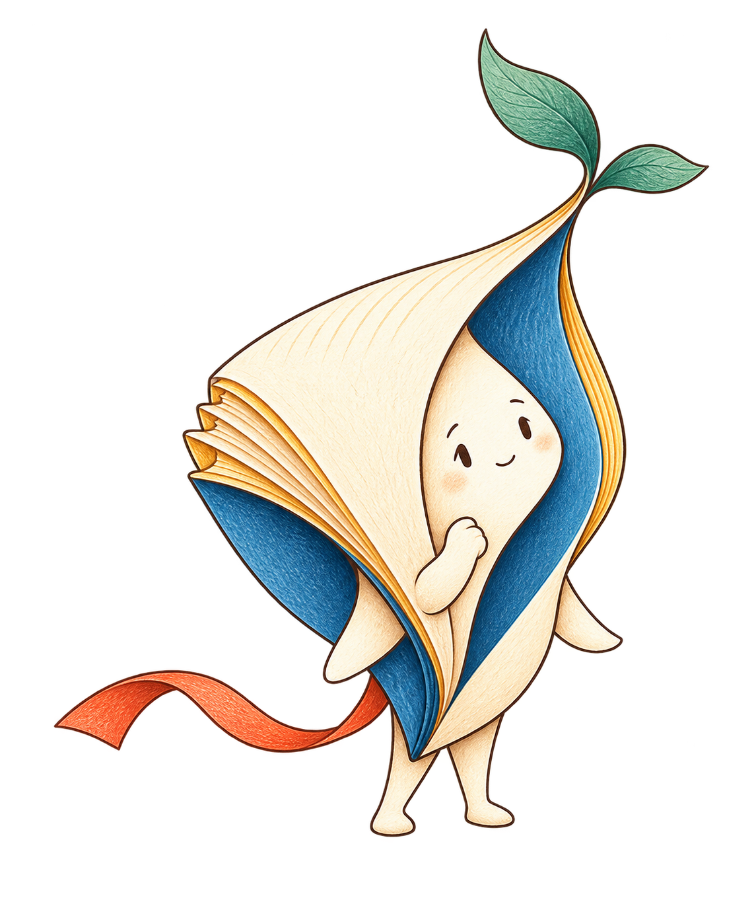
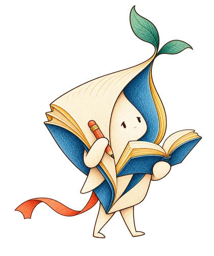

每個想法，都值得發芽。READ · THINK · SHARE
每個想法，都值得發芽。READ · THINK · SHARE
活動期間日期確認後公告
挑戰辦法
不限學校，學生都可以參加。讀一本書、寫下理解，再用自己的話分享。
- 01
讀一本書
選一本想讀的好書，讀完後留下書名與作者。
- 02
留下筆記
依章節整理重點，標示出處，再用自己的話寫下理解。
- 03
寫出想法
從筆記挑出有感的觀點，寫下理由，連結自己的生活經驗。
- 04
用自己的話說
用五分鐘內分享：書在說什麼？哪裡最有感？和生活有什麼關係？

完成四步，通過後領取好書一本
依通過順序保留名額，同一人每期一份。
贈書剩餘—本／共 — 本
送出之後，接下來呢？
- 01

送出作品
筆記、想法、說書音檔
完成後一起送出。 - 02
等候審核
原則 5 個工作天
AI 協助，人工確認。 - 03
通過領好書
依通過順序保留名額
收到通知，再填收件資料。
本期贈書名額已滿，通過者依序候補。
正式活動流程示意；Demo 尚未啟用寄信、自動轉寫與寄書。
本期贊助單位
台灣閱讀文化基金會
提供本期 100 本好書。
贊助單位 Logo（待提供）
認識共同發起人
緣起
共同發起人合照（待提供）
吳孟霖 × 簡子惠
一位工程師 × 一位自然科老師。
從閱讀與寫作出發，陪孩子練習理解、思考與表達。

QUESTIONS & ANSWERS
想問的，都在這裡。
我可以選什麼書？
先選一本你願意完整閱讀、能整理內容並分享想法的書。正式活動的選書範圍將在開放報名前公告。
筆記和反思，要寫些什麼？
筆記請標示章節，用自己的話寫出重點；反思則說明你的看法、理由，以及它與生活的連結。重點是內容具體、能看出理解，而不是湊字數。
說書一定要很會演講嗎？
不用。口述是為了確認你理解自己寫下的內容。可以參考自己的筆記，自然說明這本書在談什麼、你怎麼想，以及為什麼。
送出後，怎麼知道能不能領書？
點右上方「立即參加／登入」，登入後就能查看結果。通過且取得名額後，才會出現領取資料表；需要補充時，依回饋修改後再次送出。
目前是流程預覽，尚未開放正式報名或寄送。